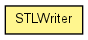

toxi.geom.mesh
Class STLWriter
java.lang.Object
 toxi.geom.mesh.STLWriter
toxi.geom.mesh.STLWriter
public class STLWriter
- extends java.lang.Object

A simple, but flexible and memory efficient exporter for binary STL files.
Custom color support is implemented via the STLcolorModel interface and the
exporter comes with the 2 most common format variations defined by the
DEFAULT and MATERIALISE constants.
The minimal design of this exporter means it does not build an extra list of
faces in RAM and so is able to easily export models with millions of faces.
http://en.wikipedia.org/wiki/STL_(file_format)
|
Method Summary |
void |
beginSave(java.io.OutputStream stream,
int numFaces)
|
void |
beginSave(java.lang.String fn,
int numFaces)
|
void |
endSave()
|
void |
face(Vec3D a,
Vec3D b,
Vec3D c)
|
void |
face(Vec3D a,
Vec3D b,
Vec3D c,
int rgb)
|
void |
face(Vec3D a,
Vec3D b,
Vec3D c,
Vec3D normal,
int rgb)
|
void |
setScale(float s)
|
void |
setScale(Vec3D s)
|
void |
useInvertedNormals(boolean state)
|
| Methods inherited from class java.lang.Object |
equals, getClass, hashCode, notify, notifyAll, toString, wait, wait, wait |
DEFAULT_RGB
public static final int DEFAULT_RGB
- See Also:
- Constant Field Values
DEFAULT
public static final STLColorModel DEFAULT
MATERIALISE
public static final STLColorModel MATERIALISE
DEFAULT_BUFFER
public static final int DEFAULT_BUFFER
- See Also:
- Constant Field Values
STLWriter
public STLWriter()
STLWriter
public STLWriter(STLColorModel cm,
int bufSize)
beginSave
public void beginSave(java.io.OutputStream stream,
int numFaces)
beginSave
public void beginSave(java.lang.String fn,
int numFaces)
endSave
public void endSave()
face
public void face(Vec3D a,
Vec3D b,
Vec3D c)
face
public void face(Vec3D a,
Vec3D b,
Vec3D c,
int rgb)
face
public void face(Vec3D a,
Vec3D b,
Vec3D c,
Vec3D normal,
int rgb)
setScale
public void setScale(float s)
setScale
public void setScale(Vec3D s)
useInvertedNormals
public void useInvertedNormals(boolean state)